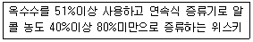
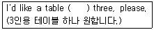
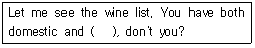
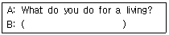

조주기능사 (2006-04-02 기출문제)
1과목: 주류학개론
1. 살구의 냄새가 나는 달콤한 증류주는 어느 것인가?
- Apricot Brandy
- Anisette
- Cherry Brandy
- Amer
(정답률: 77%)

2. 칵테일의 기능에 따른 분류 중 롱드링크(Long drink)가 아닌 것은?
- 피나콜라다(Pina Colada)
- 마티니(Martini)
- 톰칼린스(Tom Collins)
- 치치(Chi-Chi)
(정답률: 88%)
3. 생강을 주원료로 만든 것은?
- 진저엘
- 토닉워터
- 소다수
- 파워에이드
(정답률: 87%)
4. Creme De Cacao로 만들 수 있는 칵테일이 아닌 것은?
- Cacao Fizz
- Mai-Tai
- Alexander
- Grasshopper
(정답률: 43%)
5. 위스키가 기주로 쓰이지 않는 칵테일은?
- 뉴욕(New York)
- 로브 로이(Rob Roy)
- 블랙러시안(Black Russian)
- 맨하탄(Manhattan)
(정답률: 64%)
6. 스팅거(Stinger)라는 칵테일(Cocktail)의 주재료와 부재료는 각각 무엇인가?
- Brandy와 Mint
- Gin과 Vermouth
- Brandy와 Cacao
- Whisky와 Cream
(정답률: 26%)
7. 영국에서 발명한 무색투명한 음료로서 레몬, 라임, 오렌지, 키니네 등으로 엑기스를 만들어 당분을 배합한 것으로 열대 지방에서 일하는 노동자들의 식욕부진과 원기를 회복하기 위해 제조되었던 것이며, 제 2차 세계대전 후 진(gin)과 혼합하여 진토닉을 만들어 세계적인 음료로 환영받고 있는 것은?
- 미네랄수(Mineral Water)
- 사이다(Cider)
- 토닉수(Tonic Water)
- 칼린스 믹스(Collins Mix)
(정답률: 86%)
8. 아쿠아비트(Aquavit)에 대한 설명 중 틀린 것은?
- 감자를 당화시켜 연속증류법으로 증류한다.
- 마실 때는 차게 하여 식후주에 적합하다.
- 맥주와 곁들여 마시기도 한다.
- 진(Gin)의 제조 방법과 비슷하다.
(정답률: 30%)
9. 꼬냑은 무엇으로 만든 술인가?
- 보리
- 옥수수
- 포도
- 감자
(정답률: 87%)
10. 적색 포도주(Red Wine)병의 바닥이 요철로 된 이유는?
- 보기 좋게 하기 위하여
- 안전하게 세우기 위하여
- 용량표시를 쉽게 하기 위하여
- 찌꺼기가 이동하는 것을 방지하기 위하여
(정답률: 76%)
11. 양조주가 아닌 술은?
- 소주
- 적포도주
- 맥주
- 청주
(정답률: 80%)
12. 크림이나 계란의 비린 냄새를 제거하는 용도로 사용하는 칵테일 부재료는 무엇인가?
- 클로브(Clove)
- 타바스코 소스(Tabasco Sauce)
- 넛맥(Nut meg)
- 페퍼(Pepper)
(정답률: 68%)
13. 칵테일 부재료로 사용되고 매운 맛이 강한 향료로서 주로 토마토 쥬스가 들어가는 칵테일에 사용되는 것은?
- 넛맥(Nut meg)
- 타바스코 소스(Tabasco sauce)
- 민트(Mint)
- 클로브(Clove)
(정답률: 94%)
14. 다음 품목 중 청량음료(Soft Drink)에 속하는 것은?
- 탄산수(Sparkling Water)
- 생맥주(Draft Beer)
- 톰칼린스(Tom Collins)
- 진 휘즈(Gin Fizz)
(정답률: 91%)
15. 계란, 밀크, 시럽 등의 부재료가 사용되는 칵테일을 만드는 방법은?
- Mix
- Stir
- Shake
- Float
(정답률: 93%)
16. 오렌지를 주원료로 만든 술이 아닌 것은?
- Triple Sec
- Tequila
- Cointreau
- Grand Marnier
(정답률: 89%)
17. 혼합하기 어려운 재료를 섞거나 프로즌 드링크를 만들 때 쓰는 기구 중 가장 적합한 것은?(오류 신고가 접수된 문제입니다. 반드시 정답과 해설을 확인하시기 바랍니다.)
- 쉐이커
- 브랜더
- 믹싱글라스
- 믹서
(정답률: 13%)
18. 다음 중 조선시대에 대표적인 술이 아닌 것은?
- 오가피주
- 백하주
- 죽통주
- 도화주
(정답률: 50%)
19. 일반적으로 양주병에 80proof라고 표기되어 있는 것은 알콜도수 몇 도에 해당하는가?
- 주정도 80%(80°)라는 의미이다.
- 주정도 40%(40°)라는 의미이다.
- 주정도 20%(20°)라는 의미이다
- 주정도 10%(10°)라는 의미이다.
(정답률: 95%)
20. 진(Gin)에 대한 설명 중 틀린 것은?
- 진의 원료는 보리, 호밀, 옥수수 등 곡물을 주원료로 한다.
- 무색투명한 증류주이다.
- 증류 후 1~2년간 저장(Age)한다.
- 두송자(Juniper berry)를 사용하여 착향 시킨다.
(정답률: 45%)
21. 경북 안동의 전통주로 한가위 차례상에서 빼 놓을 수 없는 제수폼이며 조상께 올리는 술로 오랜 세월을 이어오며 조상의 숨결이 스며있는 전통 민속주는?
- 백세주
- 과하주
- 안동소주
- 연엽주
(정답률: 74%)
22. 일반적으로 핑크레이디 칵테일에 사용되지 않는 재료는?
- 진
- 그레나딘시럽
- 베네딕틴
- 계란흰자
(정답률: 42%)
23. 맨하탄(Manhattan)칵테일을 담아 제공하는 글라스로 가장 적합한 것은?
- 샴페인 글라스(Champagne Glass)
- 칵테일 글라스(Cocktail Glass)
- 하이볼 글라스(High-ball Glass)
- 온드락 글라스(On the Rock Glass)
(정답률: 60%)
24. 일반적으로 스테인리스 재질로 삼각형 컵이 등을 맞대고 있으며, 바에서 칵테일 조주시 술이나 쥬스, 부재료 등의 용량을 재는 기구는?
- 바스푼(Bar spoon)
- 머들러(Muddler)
- 스트레이너(Strainer)
- 지거(Jigger)
(정답률: 87%)
25. 진(Gin)베이스로 들어가는 칵테일이 아닌 것은?
- Gin Fizz
- Screw Driver
- Dry Martini
- Gibson
(정답률: 63%)
26. 다음 중 Onion 장식을 하는 칵테일은?
- 마가리타(Margarita)
- 마티니(Martini)
- 로브로이(Rob Roy)
- 깁슨(Gibson)
(정답률: 85%)
27. 꼬냑의 등급 중에서 최고품은?
- V.S.O.P
- Napoleon
- X.O
- Extra
(정답률: 69%)
28. 다음 리큐르(Liqueur) 중 그 용도가 다른 것은?(오류 신고가 접수된 문제입니다. 반드시 정답과 해설을 확인하시기 바랍니다.)
- 드람뷔이(Drambuie)
- 갈리아노(Galliano)
- 시나(Cynar)
- 꼬인트루(Cointreau)
(정답률: 9%)
29. 칵테일 장식에 대한 설명 중 잘못된 것은?
- 어떻게 장식해야 하는 것은 일정한 규정에 따라야 하므로 조주원의 개성을 표현하지 않는다.
- 잘 알려진 칵테일에는 표준 레시피에 어떤 장식을 하라는 지시가 나와 있다.
- 재료의 배합비율이 같아도 장식에 따라 명칭이 달라지는 것도 있다.
- 신선한 재료를 청결한 칼로 예쁘게 썰어 칵테일의 분위기를 살린다.
(정답률: 82%)
30. 다음은 어떤 위스키에 대한 설명인가?

- 스카치 위스키(Scotch Whisky)
- 버번 위스키(Bourbon Whisky)
- 아이리쉬 위스키(Irish Whisky)
- 카나디언 위스키(Canadian Whisky)
(정답률: 77%)
2과목: 주장관리개론
31. 재고 관리상 쓰이는 F.I.F.O란 용어의 뜻은?
- 정기 구입
- 선입 선출
- 임의 불출
- 후입 선출
(정답률: 94%)
32. 캔에 들은 쥬스를 사용하고 남았다. 가장 적당한 취급관리 방법은?
- 캔에 남은 채로 냉장고에 보관한다.
- 캔에 남은 것은 8℃의 냉장고에 보관한다.
- 캔에 남은 것은 다른 병에 담아 냉장고에 보관한다.
- 캔에 남은 것은 다른 스테인리스 용기에 담아 냉장고에 보관한다.
(정답률: 62%)
33. 칵테일 조주시 레몬이나 오렌지 등으로 즙으로 짤 때 사용하는 기구는?
- 스퀴저(Squeezer)
- 머들러(Muddler)
- 쉐이커(Shaker)
- 스트레이너(Strainer)
(정답률: 92%)
34. 럼(Rum)의 특징을 설명한 것 중 틀린 것은?
- 사탕수수를 압착하여 액을 얻는다.
- 헤비럼(Heavy-rum)은 감미가 높다.
- 효모(Yeast)를 첨가하여 만든다.
- 감자로 만든 증류주이다.
(정답률: 81%)
35. 혼성주에 대한 설명으로 오렌지 껍질을 원료로 만들어지는 술의 이름은?
- 깔루아(Kahlua)
- 크림 드 카카오(Cream de Cacao)
- 큐라소(Curacao)
- 드람뷔이(Drambuie)
(정답률: 67%)
36. 바(Bar)영업에 있어 필요치 않는 것은?
- 냉장시설과 제빙시설
- 술 저장 창고
- 작업공간
- 린넨 창고
(정답률: 89%)
37. 칵테일의 기본 기법이 아닌 것은?
- 직접 넣기(Building)
- 휘젓기(Stirring)
- 띄우기(Floating)
- 플래어(Flair)
(정답률: 77%)
38. 주장(Bar)을 의미하는 것이 아닌 것은?
- 술을 중심으로 한 음료 판매가 가능한 일정시설을 갖추어 판매 하는 공간
- 고객과 바텐더 사이에 놓인 널판을 의미
- 프런트 바에서 주문과 서브가 이루어지는 고객들의 이용 장소
- 조리 가능한 시설을 갖추어 음료와 식사를 제공하는 장소
(정답률: 76%)
39. 다음 음료 중 서비스 온도가 가장 낮은 것은?(오류 신고가 접수된 문제입니다. 반드시 정답과 해설을 확인하시기 바랍니다.)
- 백 포도주
- 보드카
- 위스키
- 브랜디
(정답률: 13%)
40. 포도주(Wine)의 분류 중 색에 따른 분류에 포함되지 않는 것은?
- 레드 와인(Red Wine)
- 화이트 와인(White Wine)
- 블루 와인(Blue Wine)
- 로제 와인(Rose Wine)
(정답률: 86%)
41. 위스키(Whisky)의 설명 중 틀린 것은?
- 생명의 물이란 의미를 가지고 있다.
- 보리, 밀, 옥수수 등의 곡류가 주원료이다.
- 주정을 이용한 혼성주이다.
- 원료 및 제법에 의하여 몰트 위스키, 그레인 위스키, 블렌디드 위스키로 분류한다.
(정답률: 88%)
42. 와인 병을 눕혀서 보관하는 가장 적당한 이유는?
- 숙성이 잘 되게 하기 위해서
- 침전물을 분리하기 위해서
- 맛과 멋을 내기 위해서
- 색과 향이 변질되는 것을 방지하기 위해서
(정답률: 70%)
43. 조주시 필요한 쉐이커(Shaker)의 3대 구성 요소의 명칭이 아닌 것은?
- 믹싱(Mixing)
- 보디(Body)
- 스트레이너(Strainer)
- 캡(Cap)
(정답률: 60%)
44. 와인의 빈티지(Vintage)이란?
- 숙성기간
- 발효기간
- 포도의 수확년도
- 효모의 배합
(정답률: 81%)
45. 와인을 선택할 때 집중적으로 고려해야 할 사항으로 가장 적당한 것은?
- 가격, 종류, 숙성년도, 병의 크기
- 산지, 수확년도, 브랜드명, 요리와의 조화
- 제조회사, 가격, 장소, 발효기간
- 브랜드명, 병의 색깔, 가격, 와인 색깔
(정답률: 86%)
46. Wine Steward의 주임무는?
- 와인 구매
- 와인 판매
- 와인 관리
- 와인 검수
(정답률: 29%)
47. 코스터(Coaster)의 용도는?
- 잔 닦는 용
- 잔 받침대 용
- 남은 술 보관용
- 병마개 따는 용
(정답률: 93%)
48. 바텐더가 지켜야 할 바(Bar)에서의 예의로 가장 올바른 것은?
- 정중하게 손님을 환대하여 고객이 기분이 좋도록 Lip Service를 한다.
- 자주 오시는 손님에게는 오랜 시간 이야기 한다.
- Second order를 하도록 적극적으로 강요한다.
- 고가의 품목을 적극 추천하여 손님의 입장보다 매출에 많은 신경을 쓴다.
(정답률: 66%)
49. 설탕 후로스팅(Sugar frosting)할 때 준비해야 하는 것은?
- 레몬(Lemon)
- 오렌지(Orange)
- 얼음(Ice)
- 꿀(Honey)
(정답률: 40%)
50. 다음 중 디켄더(Decanter)와 가장 관계있는 것은?
- Red Wine
- White Wine
- Champagne
- Sherry Wine
(정답률: 64%)
3과목: 고객서비스영어
51. 다음 ( ) 안에 적당한 말은?

- against
- to
- from
- for
(정답률: 76%)
52. 칵테일을 만들 때 「Would you like it dry?」에서 dry의 뜻은?
- not wet
- sweet
- not sweet
- wet
(정답률: 90%)
53. 다음 전치사 중에서 ( )안에 알맞은 것은?
- in
- on
- of
- for
(정답률: 44%)
54. What is the negative characteristic in taste and finish of wine?
- flat
- full-bodied
- elegant
- pleasant
(정답률: 50%)
55. 다음 ( )안에 들어갈 적당한 말은?

- imported
- international
- export
- external
(정답률: 31%)
56. Which one is made with rum, strawberry liqueur, lime juice, grenadin syrup?
- strawberry daiquiri
- strawberry comfort
- strawberry colada
- strawberry kiss
(정답률: 26%)
57. Which one is the cocktail containing "Midori"?
- Cacao fizz
- June bug
- Rusty nail
- Blue note
(정답률: 61%)
58. 다음 B에 알맞은 대답은?

- I'm writing a letter to my mother
- I can't decide
- I work at bank
- Yes, thank you
(정답률: 50%)
59. Which cocktail name means "Freedom"?
- God mother
- Cuba libre
- God father
- French kiss
(정답률: 75%)
60. 다음 ( )안에 들어갈 가장 적당한 표현은?
- asked
- will ask
- ask
- be ask
(정답률: 50%)